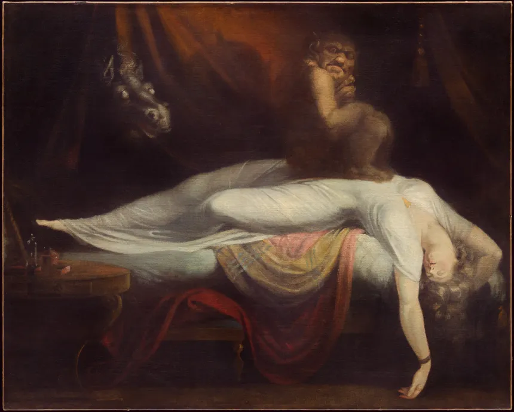
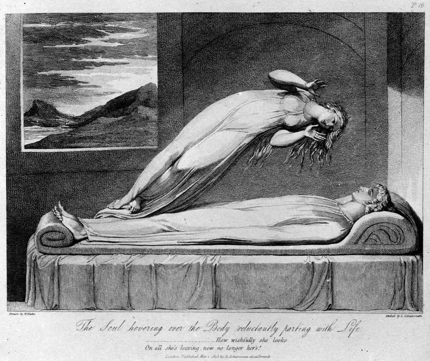

Lucid dreams occur when you have complete control of your dream. This usually happens when something clicks in your consciousness and you figure out that you are indeed dreaming. For most people, the world then becomes their sandbox where they are free to imagine any scenario and control any action around them. Others are not so lucky and they enter what is called a lucid nightmare. In a lucid nightmare, you are able to understand that you are dreaming, but you are unable to interact with the dream. Often times, these dreams will turn into nightmares that feel much more life-like.
If your lucid dreams are usually pleasent, there are actually ways to trigger these events to occur more often. If you're curious you can try these methods below:
Sleepwalking occurs during REM sleep. People who experience sleepwalking will get out of bed, open their eyes, walk, or even perform tasks all while sleeping. People who are affected by sleepwalking will often act in unusal ways. There are stories of people feeling full in the morning because they made a peanut-butter and jelly sandwich while sleepwalking. In incredibly rare and tragic cases, people have actually ended their lives while sleepwalking. Death is ruled as a parasomnia pseudo-suicide. Sleepwalking is like the opposite of a lucid dream. While in a lucid dream, the consciousness controls the unconcious; in a sleepwalking state, the unconcious controls the concious. When a person wakes up the next day, they do not remember they were sleepwalking.
A nightmare is something everyone has experienced at one point or another. Some common nightmares may have some meaning behind it. If you struggle with recurring nightmares, it might be due to situations you deal with on the regular. 
A night terror is similar to a nightmare and similar to sleepwalking but is generally not classed as either. People who experience night terrors may exhibit screaming, crying, sweating and movement due to an intense but invisible fear. A person who is in a night terror may appear to be awake, although they are still asleep. By the next day the person experiencing the night terror will forget they even had it. Most people outgrow their night terrors by teen years.
Sleep paralysis is when you are semi-conscious but unable to move. You can only open your eyes and look around your room. Although you do feel completely awake, and you are physically looking around your room, your brain is still in the sleep/dream state. People who get sleep paralysis report seeing shadow figure or demons in their room. Some people may feel something rubbing on their back or whispering in their ears. In the worst cases, an entity is sitting on your chest and staring in your eyes while choking you. Sleep paralysis occurs between the stages of wakefulness and sleep, and is more frequent with restless sleep. You can counteract sleep paralysis by either closing your eyes and falling back to sleep, or forcing yourself with all your might to wake up.
An out-of-body experience is the sensation of your consciousness leaving your body. During this experience, you can look down at your physical body from above. Many people describe this scenario as if your soul is leaving your body. An OBE may trigger during or after a near-death experience, such as cardiac arrest or drowning, alongside other phenomena like flashbacks of memories. An out-of-body experience is an incredibly uncommon event with only 5% of the population ever experiencing it. Most people who get an OBE will never experience it ever again.
